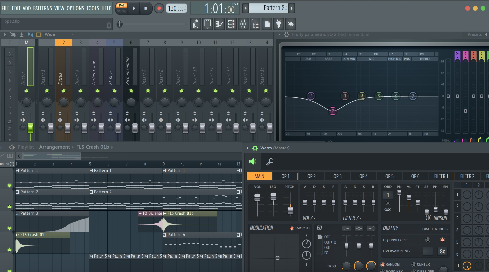
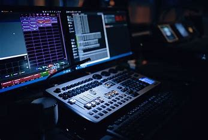
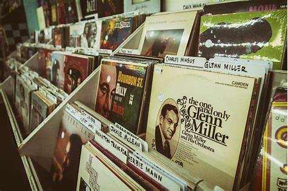

General
Ein Step-Sequencer ist eine spezielle Art von Audio- oder MIDI-Sequencer, der Töne, Noten oder Drum-Sounds in einem festen taktilen Raster (Steps) anordnet. Er wird häufig in elektronischer Musik, insbesondere in Genres wie Techno, House oder Hip-Hop, verwendet, da er ein präzises und einfaches Erstellen von rhythmischen Patterns ermöglicht.
Wie funktioniert ein Step-Sequencer? Ein Step-Sequencer arbeitet nach einem Schritt-für-Schritt-Prinzip, bei dem jede Note oder jedes Sample auf einem bestimmten Takt-Slot (Step) im Raster platziert wird. Diese Steps werden dann in einer Schleife (Loop) abgespielt, wodurch rhythmische Muster entstehen.
- Rasterbasiert – Meistens 8, 16 oder 32 Steps pro Sequenz
- Wiederholungsschleifen – Muster laufen in einer Endlosschleife
- Tempo & Takt – Anpassung der Geschwindigkeit (BPM) und der Taktart (z. B. 4/4, 3/4)
- Notenlängen & Velocity – Steuerung der Lautstärke und Anschlagstärke jeder Note
- Pattern-Variation – Wechsel zwischen verschiedenen gespeicherten Sequenzen
Pages
Produce
Die Produce-Seite ist das kreative Zentrum der Website. Hier kannst du mit dem Step-Sequencer eigene Beats erstellen, indem du verschiedene Sounds und Instrumente kombinierst. Setze Noten in das Raster, passe Tempo und Lautstärke an und experimentiere mit unterschiedlichen Rhythmen. Dank der intuitiven Benutzeroberfläche kannst du sofort loslegen – egal, ob du Anfänger oder erfahrener Produzent bist.
Neben der Beat-Erstellung bietet diese Seite zahlreiche Anpassungsmöglichkeiten. Wenn dein Track fertig ist, speichere ihn in deiner Library oder teile ihn mit anderen Nutzern. So wird jeder Besuch auf der Produce-Seite zu einem neuen musikalischen Erlebnis.
Library
In der Library findest du alle Beats, die du bereits erstellt hast. Hier kannst du sie jederzeit anhören, sortieren und verwalten. Nutze die Suchfunktion oder Filteroptionen, um schnell einen bestimmten Track zu finden. Außerdem hast du die Möglichkeit, deine eigenen Kreationen zu bewerten oder deine Lieblingsbeats mit einem Favoriten-Tag zu markieren.
Doch die Library ist mehr als nur ein persönliches Archiv – sie ist auch eine Inspirationsquelle. Höre dir die Werke anderer User an, bewerte ihre Beats und entdecke neue Sounds. Durch den Austausch mit der Community kannst du nicht nur dein eigenes Musikverständnis erweitern, sondern auch wertvolles Feedback zu deinen Tracks erhalten.
Shop
Der Shop bietet dir die Möglichkeit, dein musikalisches Arsenal zu erweitern. Hier kannst du neue Instrumente, Effekte und Soundpacks erwerben, um deinen Beats eine noch individuellere Note zu verleihen. Von klassischen Drumkits über futuristische Synthesizer bis hin zu speziellen Vocals – die Auswahl ist riesig und wird regelmäßig aktualisiert.
Zusätzlich findest du im Shop verschiedene Anpassungsoptionen für den Sequencer selbst. Ändere das Design, schalte erweiterte Funktionen frei oder erhalte Zugriff auf exklusive Features. Egal, ob du nach neuen Klangfarben suchst oder dein Produktionstool weiter verbessern möchtest – der Shop hilft dir, dein kreatives Potenzial voll auszuschöpfen.